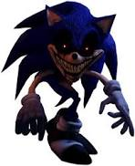

2011x Outcome Memories render
X appears as a monstrous, deformed version of Sonic's usual appearance. It is proportionally inaccurate, with a chest similar to that of the modern Sonic and proportions similar to that of the classic Sonic, with its arms, legs and belly being skinny and stretched, to a point of showing the outline of its "bones." It has a black sclera pouring blood that leaks down to its nose, along with glowing red and white eyes, and a disproportionately large mouth with many sharp, yellow and rotten teeth. Its fur is noticeably much brighter, its ears more closely resemble a demon's horns, and its quills are significantly longer. For attire, X wears white gloves (occasionally stained with blood), as well as strangely large grey sneakers with a white strap and socks. Alternatively, X is depicted with dark blue fur, in contrast to its usual bright fur.
An interdimensional entity who hails from the VOID, X is a being whose fascination with humanity and obsession with the Sonic the Hedgehog franchise created a destructive mix, forming a vessel for itself, with its goal being to spread and cause as much pain and suffering as it can go. It does this by playing various games, some subtle in its sadism, but always rigged to torture and manipulate the players that it forces into these games, using the souls of its new "friends" to fuel the vessels to play its games over and over again.
"play my game"